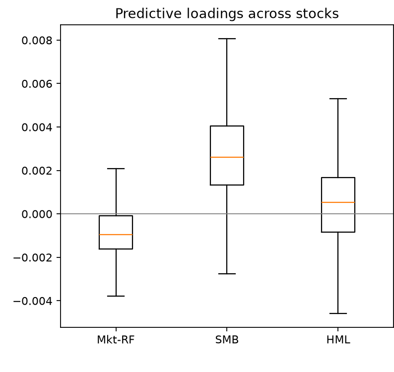

팩터 모델
예측력은 어디서 오고, 무엇 때문에 뒤집히는가
0. 핵심 요약
『Machine Trading』 2장은 "무엇을 사면 오르는가"의 목록이 아니다. 이 장이 실제로 가르치는 것은 예측력이라는 주장이 성립하려면 무엇이 함께 고정되어야 하는가이다. 같은 ROE 요인이 대형주에서는 0이고 소형주에서는 5%를 넘으며, 같은 유동성 요인이 상위 3,500 종목에서는 "비유동주를 사라"이고 SPX 안에서는 정반대다. 같은 공매도 잔량이 SIR로 재면 공매도자가 틀렸다고, DTC로 재면 옳았다고 말한다. 이 장의 예제들은 팩터가 통한 사례집이 아니라 주장이 무너지는 방식의 카탈로그에 가깝다.
- 왜 — 알파가 아니라 팩터를 공부하는 이유는 무엇인가? (닳아 없어지지 않기 때문)
- 어떻게 — 관측되는 것과 회귀로 캐내는 것이 시계열·횡단면에서 어떻게 뒤바뀌는가?
- 무엇이 뒤집는가 — 유니버스, 측정 정의, 순매수 여부, 그리고 인덱싱 실수 하나가 결론을 어떻게 바꾸는가?
| 단계 | 핵심 질문 | 장의 주장 | 실무에서 남는 판단 |
|---|---|---|---|
| 동기 | 왜 알파가 아니라 팩터인가? | 팩터 수익은 분산 불가능한 위험의 대가라 차익거래로 소멸되지 않는다. | 수용력과 지속성을 알파보다 우선해 본다. |
| 좌표계 | 요인인가 적재량인가? | 시계열은 요인이 관측되고 적재량을 회귀로 캔다. 횡단면은 정반대다. | 데이터 준비와 회귀 설계가 통째로 달라지므로 먼저 구분한다. |
| 서술 vs 예측 | 같은 시점인가 다음 시점인가? | 식 (2.1)은 설명용이고 (2.2)로 옮겨야 거래가 된다. | 동시대 $R^2$ 를 예측력의 근거로 쓰지 않는다. |
| 검증 | 표본 밖에서도 남는가? | 파마-프렌치는 표본 내 화려하고 표본 밖에서 무너진다. | 훈련·테스트를 시간 순서로 나누고 표본 내 성과를 버린다. |
| 경계 | 어디까지 일반화되는가? | 유니버스·측정 정의·순노출이 부호를 뒤집는다. | 논문의 수치를 내 유니버스에서 다시 재기 전에 믿지 않는다. |
| 비용 | 비용을 넣어도 남는가? | 회전율이 높은 전략일수록 편도 2bps에도 부호가 바뀐다. | 비용 민감도를 성과표와 같은 화면에서 본다. |
본문의 수치는 두 종류다. 책이 보고한 값과, 공식 아카이브(epchan.com/book3, SHA-256 검증)를 내려받아 Python으로 다시 돌린 재현 실험 값이다. 둘을 섞지 않고 나란히 적었으며, 재현하지 못한 절은 재현하지 못했다고 명시했다(표 6). 재현은 15개 자동 검증을 통과했다.
1. 알파는 숨겨야 하고, 팩터는 대놓고 판다
- 알파는 팩터 위험과 무관한 초과수익이라 분산으로 위험을 0까지 줄일 수 있다 — 그래서 모두가 원하고, 그래서 닳아 없어진다.
- 팩터 위험은 아무리 분산해도 남는다 — 그래서 남들이 꺼리고, 그 대가가 해마다 살아남는다.
- 이 장에서 팩터 모델은 예측변수가 곧 팩터인 선형 모델로 한정된다. 그 회귀계수를 스마트 베타 라 부른다.
수익만이 목적이라면 SPY를 사서 30~40년 들고 있으면 된다. 그럼에도 그러지 못하는 이유는 시장 위험(market risk) 때문이다 — 몇 년씩 이어지는 손실 구간에서 하필 현금이 필요해질 수 있다. 그렇다면 가치주를 사고 성장주를 파는 롱-숏 시장중립 포트폴리오 는 어떤가? 대체로 잘 통하지만 1990년대 후반 닷컴 버블에서는 그 포트폴리오마저 크게 물렸다. 시장 위험을 없앴다고 해서 그 조합에 딸려 오는 다른 위험까지 사라지지는 않는다. 이것이 팩터 위험(factor risk) 이다.
여기서 이 장 전체를 지탱하는 역설이 나온다. 알파는 공짜 점심이라 발견되는 순간 사람들이 몰려 소멸하고, 설령 아무도 못 찾아도 제한된 수용력(limited capacity) 때문에 자본이 몰리면 사그라든다. 반면 팩터 수익은 공짜가 아니다. 분산으로 없앨 수 없는 위험을 반드시 함께 짊어져야 한다. 그런데 바로 그 불편한 대가 덕분에 팩터 수익은 사라지지 않는다. 남들이 그 위험이 무서워 손대지 않으니, 감당하기로 한 사람에게 보상이 계속 돌아온다.
 발표자 재구성. 두 열은 같은 축(공짜인가 / 사라지는가 / 공개할 수 있는가)으로 대비되며, "위험이 대가이기 때문에 살아남는다"는 이 장의 전제를 담는다.
발표자 재구성. 두 열은 같은 축(공짜인가 / 사라지는가 / 공개할 수 있는가)으로 대비되며, "위험이 대가이기 때문에 살아남는다"는 이 장의 전제를 담는다.
다만 팩터가 영원하다는 뜻은 아니다. 이 장 뒤쪽에서 다룰 SMB, 풋-콜 내재 변동성, 내재 시장 변동성 변화, DTC 공매도 잔량은 시간이 지나며 수익이 줄었다. 저자의 해석은 위험 자체가 줄었다고 투자자들이 인식하게 되었기 때문이다 — SMB의 경우, 충분히 분산만 되면 소형주가 대형주보다 딱히 더 위험하지 않다고 믿게 된 것이다(엔론과 리먼 브라더스는 둘 다 대형주였다).
용어를 좁혀 두자. 이 책 뒷부분의 많은 전략이 암묵적 팩터 노출 을 갖지만, 팩터 모델(factor model) 이라는 말은 선형 회귀의 예측변수가 곧 팩터인 단순한 선형 모델 로만 쓴다. 그래서 팩터에 붙는 회귀계수를 스마트 베타(smart beta) 라 부른다 — '멍청한' 베타는 그냥 주식과 시장 지수 사이의 회귀계수다.
팩터 모델을 공부한다는 것은 결국 "어떤 위험을 감수하면 그 대가로 꾸준히 보상받는가" 를 공부하는 일이다. 그래서 이 장의 모든 예제에서 던져야 할 첫 질문은 "수익이 얼마인가"가 아니라 "내가 지금 무슨 위험을 사고 있는가" 이다.
2. 두 좌표계 — 무엇이 관측되고 무엇을 회귀로 캐내는가
- 시계열 요인은 시간에 따라 변하되 종목을 가리지 않는다(시장수익·HML·SMB·UMD). 요인은 관측되고 적재량 $\beta(s)$ 를 회귀로 캔다.
- 횡단면 요인은 종목마다 다르되 시간에는 무던하다(ROE·BM·P/E·유동성). 적재량이 관측되고 요인을 회귀로 캔다 — 거울상이다.
- 식 (2.1)은 좌우변 시점이 같아 서술적 이다. 좌변만 $t+1$ 로 옮긴 (2.2)라야 예측적 이 된다.
어떤 주식의 초과수익을 여러 공통 요인의 가중합으로 분해하면 다음과 같다.
$$\mathrm{Return}(t,s)-r_F=\alpha(s)+\beta_1(s)\,\mathrm{Factor}_1(t)+\beta_2(s)\,\mathrm{Factor}_2(t)+\cdots+\varepsilon(t,s) \tag{2.1}$$
여기서 $\mathrm{Factor}_i(t)$ 는 모든 종목에 공통인 $i$ 번째 시계열 요인, $\beta_i(s)$ 는 주식 $s$ 가 그 요인에 반응하는 정도인 요인 적재량(factor loading), $\alpha(s)$ 는 공통 요인으로 설명되지 않는 고유 초과수익, $\varepsilon$ 은 시계열·횡단면 모두에서 상관 없는 백색잡음이다. 바로 이 $\varepsilon$ 이 분산으로 없앨 수 있는 위험이고, $\beta_i(s)\,\mathrm{Factor}_i(t)$ 항이 없앨 수 없는 위험이다.
여기서 결정적인 관찰 하나. 양변의 시간 인덱스 $t$ 가 같다. 즉 교과서의 대부분 팩터 모델처럼 이 식은 서술적·설명적일 뿐 예측적이지 않다. 이 식만으로 할 수 있는 것은 요인 수익이 앞으로도 같다고 가정한 뒤 $\mathrm{Return}(t,s)$ 가 큰 종목을 사는 것뿐인데, 잡음을 걷어 내고 보면 그것은 과거의 승자를 사고 패자를 파는 것에 지나지 않는다. 그래서 좌변만 한 칸 미래로 옮긴다.
$$\mathrm{Return}(t+1,s)-r_F=\alpha(s)+\beta_1(s)\,\mathrm{Factor}_1(t)+\beta_2(s)\,\mathrm{Factor}_2(t)+\cdots+\varepsilon(t,s) \tag{2.2}$$
서술적 모델이 쓸모없다는 뜻은 아니다. 다만 그 쓸모는 수익 예측이 아니라 위험 관리와 성과 귀속(performance attribution) 에 있다. 어떤 포트폴리오가 변동성 변화에 양으로 적재된다는 것을 알면 음으로 적재되는 것을 함께 들어 헤지하면 되고, 이때 변동성의 방향을 예측할 필요는 전혀 없다. 실제로 대형 펀드가 하는 팩터 모델링의 상당 부분이 여기에 있다 — 일부 투자자는 스마트 베타 ETF로 쉽게 얻을 수 있는 수익에는 성과 수수료를 주고 싶어 하지 않기 때문이다.
 발표자 재구성. 두 세계의 차이는 수식이 아니라 무엇을 눈으로 보고 무엇을 계산으로 알아내는가 에 있다. 데이터 준비와 회귀 코드가 통째로 달라지므로 먼저 구분해야 한다.
발표자 재구성. 두 세계의 차이는 수식이 아니라 무엇을 눈으로 보고 무엇을 계산으로 알아내는가 에 있다. 데이터 준비와 회귀 코드가 통째로 달라지므로 먼저 구분해야 한다.
| 구분 | 시계열 요인 | 횡단면 요인(엄밀히는 적재량) |
|---|---|---|
| 값이 변하는 축 | 시간에 따라 변하고 종목 간에는 같다 | 종목마다 다르고 시간에는 비교적 무던하다 |
| 단위 | 보통 수익률 차원(달러/시간) | 보통 무차원 비율 |
| 관측되는 것 | 요인 $\mathrm{Factor}(t)$ — 프렌치 교수 웹사이트에서 내려받는다 | 적재량 $x(s)$ — 재무제표에 적혀 있다 |
| 회귀로 캐내는 것 | 적재량 $\beta(s)$ — 종목별 다중회귀 | 요인 — 여러 분기·종목을 쌓아 한 번 학습 |
| 알파의 취급 | $\alpha(t,s)=\alpha(s)$ — 종목별 상수 | $\alpha(t,s)=\alpha(t)$ — 시점별 상수 |
| 예시 | 시장 초과수익, HML, SMB, UMD, 내재 시장 변동성 변화 | ROE, BM, P/E, 내재 모멘트, 공매도 잔량, 유동성 |
횡단면 모델에는 실무적 제약이 하나 붙는다. 원칙대로라면 매 시점 $t$ 마다 다른 회귀계수 집합을 얻어야 하지만, 한 시점의 데이터 점이 SPX 기준 약 500개뿐이라 그런 회귀는 견고하지 않다. 게다가 요인이 분기마다 바뀌어야 할 이유도 없다(적재량은 바뀌지만). 그래서 훈련셋의 여러 분기를 reshape 로 하나의 긴 벡터에 쌓아 한 번만 학습한다.

재현 실험run_chapter2_analysis.py 산출. 식 (2.2)의 $\widehat\beta(s)$ 가 종목별로 어떻게 흩어지는지 보여 준다 — 하나의 대표 베타가 아니라 종목마다 따로 돌린 회귀 라는 점이 핵심이다.
3. 예제 2.1 — 콜론 하나가 시장중립을 순숏으로 바꾼다
- 파마-프렌치 3요인으로 다음 날 수익을 예측하면 표본 내는 화려하고 표본 밖은 무너진다.
- 공식
.m파일의 롱 라인에 콜론이 빠져 있어, 상위 50개가 아니라 위에서 50번째 종목 한 개 만 롱한다 — 즉 순숏 포트폴리오다. - 버그를 고쳐 50/50으로 만들면 OOS가 양수로 바뀌지만, 편도 2bps 비용을 넣으면 다시 음수가 된다.
데이터는 CRSP의 생존편향 없는(survivorship-bias-free) 데이터베이스에서 2007-01-03~2013-12-31 구간의 종가 중간호가를 쓴다(장 마감 무렵의 호가 스프레드 확대를 피하기 위해 중간가를 골랐다). 일간 시장·HML·SMB 요인은 같은 기간에 대해 프렌치 교수 웹사이트에서 가져온다. 데이터를 절반으로 나눠 앞쪽 절반을 훈련셋으로 삼고, 각 종목마다 따로 다중회귀를 돌려 적재량을 추정한다. 재현 실험의 정렬된 표본은 1,762일 × 743종목이다.
책의 결론은 명확하다 — 표본 내에서는 아주 잘 되고, 표본 밖에서는 음의 수익을 낸다. 파마-프렌치 요인은 단기 예측에 쓸모가 없다. 그런데 재현 과정에서 그보다 더 흥미로운 것이 드러났다.
3.1 공식 코드의 인덱싱 버그
공식 FamaFrenchFactors_predictive.m 은 숏 쪽에는 I(1:topN) 을 쓰면서, 롱 쪽에는 I(end-topN+1) 만 쓴다 — :end 가 빠졌다. topN=50 이므로 이것은 상위 50개가 아니라 위에서 50번째 순위의 종목 딱 하나 를 롱한다는 뜻이다. 따라서 책이 출력한 것은 50개 숏과 1개 롱으로 이루어진 순숏(net-short) 포트폴리오 다. Python의 MATLAB 충실 경로도 같은 순위를 선택하도록 구현해 이 버그를 그대로 재현했다.
 발표자 재구성. 원본 MATLAB
발표자 재구성. 원본 MATLAB FamaFrenchFactors_predictive.m 의 두 인덱싱 라인을 대조한 것. 수치는 재현 실험의 표본 밖 값.
| 구성 | 표본 내 CAGR / Sharpe | 표본 밖 CAGR / Sharpe | 표본 밖 MDD | 2bps 차감 후 CAGR |
|---|---|---|---|---|
| 원본 — 50 숏 / 1 롱 (재현) | 105.0% / 2.47 | −6.55% / −0.60 | −23.2% | −12.18% |
| 원본 — 대조 기준 책 수치 | 103.6% / 2.46 | −7.04% / −0.64 | — | — |
| 수정 — 50 숏 / 50 롱 (재현) | 109.4% / 5.82 | +3.80% / +1.19 | −2.7% | −2.78% |
표 3에는 짚어 둘 불일치가 하나 있다. 책 본문 서술은 표본 내 CAGR 242%·Sharpe 3.7이라 적었는데, 재현 실험이 대조 기준으로 삼은 책 수치는 103.6%·2.46이고 Python 재현은 105.0%·2.47이다. 후자 둘은 허용오차(CAGR 0.03, Sharpe 0.08) 안에서 맞지만 본문 서술의 242%와는 크게 다르다. 이 리포트는 본문 서술이 아니라 대조 기준 수치를 쓴다. 원인은 규명하지 못했다.
재현과 대조 기준 사이에 남은 작은 격차의 후보는 MATLAB과 NumPy의 회귀·연산 순서 차이, 그리고 smartsum 의미 차이지만 입증하지 못했다. 중요한 것은 해석이다 — 이 일치는 전략이 타당하다는 증거가 아니라 버그를 정확히 재현했다는 증거다.
 재현 실험 산출. 예측 모델은 완전히 동일하고 포지션 구성 코드 한 줄만 다르다. 백테스트 결과의 부호가 전략 아이디어가 아니라 구현 세부에서 갈릴 수 있다는 실증.
재현 실험 산출. 예측 모델은 완전히 동일하고 포지션 구성 코드 한 줄만 다르다. 백테스트 결과의 부호가 전략 아이디어가 아니라 구현 세부에서 갈릴 수 있다는 실증.
4. 횡단면 펀더멘털 — 약한 설명력으로도 돈이 되는 이유, 그리고 그 함정
- 규모에 무관한 27개 펀더멘털 적재량으로 다음 분기를 예측하면 OOS CAGR 12.35%가 나온다 — $R^2$ 은 겨우 0.015 인데도.
- 규모 비례 요인까지 112개를 다 넣으면 훈련 $R^2$ 이 0.961로 뛰지만 테스트셋에서 완전히 무너진다 — 과적합의 교과서적 사례.
- ROE 단일 요인(20.17%)이 ROE+BM 두 요인(9.32%)보다 강하다. 그러나 이 수익의 상당 부분은 숨은 시장 베팅 이다.
기업 재무제표의 거의 모든 항목이 횡단면 적재량이 될 수 있으므로, 오히려 무엇을 넣을지 정하기가 어렵다. 예제 2.2는 출발점으로 규모에 무관한 비율 형태의 27개를 전부 넣는다(총매출·시가총액처럼 규모에 비례하는 것은 뺀다 — 그 부분은 시계열 SMB 요인이 더 잘 잡기 때문이다). 분기 ARQ 5개 + trailing ART 22개 구성이다.
회귀 적합은 매우 약하다. fitlm 이 NaN 행을 자동으로 무시하므로 실제로는 모든 재무 변수가 확보되는 실적 발표일에 대해서만 회귀하게 되고, 종목당 분기에 딱 하루만 입력으로 쓰인다. 그 결과 $R^2=0.015$. 그런데도 이 전략은 OOS에서 CAGR 12.35%·Sharpe 1.68·MDD 7.6%를 낸다.
우리는 정확한 수익 값을 맞힐 필요가 없다. 어떤 종목이 다른 종목보다 조금이라도 더 오를지 순서만 살짝 맞히면, 수백 종목에 롱-숏을 쌓았을 때 그 미세한 우위가 누적된다. 개별 예측은 거의 잡음이지만 잡음은 분산으로 씻겨 나가고 미약한 신호만 남는다. 금융에서 약한 $R^2$ 이 "쓸모없음"을 뜻하지 않는 이유다.
반대 방향의 교훈도 같은 예제에 들어 있다. 규모에 비례하는 것까지 포함해 112개를 몽땅 넣으면 훈련셋 $R^2$ 이 0.961(조정 $R^2$ 도 0.671)로 크게 개선되고 훈련 CAGR은 48%에 이르지만, 테스트셋에서는 음의 CAGR 로 무너진다. 요인을 늘려 얻은 설명력이 곧바로 과적합이 된 것이다.
4.1 ROE와 BM — 두 팩터에서 한 팩터로
Chattopadhyay, Lyle, Wang (2015)은 재무의 기본 원리에서 유도한 지극히 단순한 두 팩터 모델을 제시했다. 적재량은 $\log(\mathrm{ROE})$ 와 $\log(\mathrm{BM})$ 이며, ROE는 로그를 취하기 좋도록 "1 + 이익률" 형태로 정의한다.
$$\mathrm{ROE}(i,s) = 1 + X(i,s)\big/\mathrm{Book}(i-1,s)$$
여기서 $X(i,s)$ 는 가장 최근 분기 $i$ 의 특별항목 반영 전 순이익, $\mathrm{Book}(i-1,s)$ 는 직전 분기 장부가다. 구현에서는 ARQ_EPS 를 직전 분기 ARQ_BVPS 로 나누고, BM은 ARQ_PB 의 역수를 쓴다. 순이익이나 장부가가 음수인 종목은 NaN으로 설정해 입력에서 제거한다(금융 연구의 통상 관행).
| 모델 | 보유 | 재현 CAGR / Sharpe | 책 CAGR / Sharpe | 등급 | 2bps 차감 후 |
|---|---|---|---|---|---|
| 27개 펀더멘털 요인 | 63일(분기) | 12.35% / 1.676 | 12.35% / 1.676 | 수치 재현 ($10^{-5}$) | 12.17% |
| $\log(\mathrm{BM})+\log(\mathrm{ROE})$ | 21일(월) | 9.32% / 1.011 | 9.32% / 1.011 | 수치 재현 ($10^{-5}$) | 8.60% |
| $\log(\mathrm{ROE})$ 단독 | 21일(월) | 20.17% / 1.305 | 20.17% / 1.305 | 수치 재현 ($10^{-5}$) | 19.37% |
 재현 실험 산출. 세 곡선이 같은 시점에 함께 꺾인다는 점에 주목 — 서로 다른 요인 집합인데도 공통의 시장 성분을 공유한다는 신호이며, 아래 순노출 논의로 이어진다.
재현 실험 산출. 세 곡선이 같은 시점에 함께 꺾인다는 점에 주목 — 서로 다른 요인 집합인데도 공통의 시장 성분을 공유한다는 신호이며, 아래 순노출 논의로 이어진다.
ROE가 BM보다 더 믿음직한 예측 변수라는 원 논문의 주장은 재현된다. 그런데 옥에 티가 있다. 이 전략들이 만드는 포트폴리오는 대개 순매수(net long) 다. 2010~2013년은 눈부신 강세장이었으니 좋은 수익이 난 것이 놀랍지 않다. 실제로 SPY로 순노출을 헤지하면 한 팩터든 두 팩터든 OOS CAGR이 대략 0 이 된다. 순위 방식으로 시장중립을 만들어도(상위 5분위 롱·하위 5분위 숏, 전날 실적 발표 종목이 5개 이상일 때만 실행) 결과는 −9.2% 로 부호가 뒤집힌다.
그렇다면 원 논문의 4.3%는 무엇이었나? 유니버스가 다르다. 저자들은 시가총액·유동성 상위 98퍼센타일의 미국 주식을 전부 포함했지만 이 예제는 대형주(SPX)만 본다. ROE 한 팩터 모델을 소형주(SML)에 적용하면 CAGR이 5%를 넘어 발표된 결과에 훨씬 가까워진다. Kaplan (2014)도 가치 요인이 SPX 종목의 수익 예측에 쓸모없다는 것을 발견했다.
5. 재무제표 밖의 팩터 — 그리고 부호가 뒤집히는 순간들
- 옵션 트레이더는 레버리지와 정밀한 방향 베팅 때문에 정보 우위의 흔적을 옵션 가격에 먼저 남긴다 — 다섯 팩터가 모두 이 하나의 논리를 다른 각도에서 읽는다.
- 공매도 잔량은 SIR로 재면 공매도자가 틀렸고 DTC로 재면 옳았다 — 같은 직관, 다른 측정, 반대 결론.
- 유동성 팩터는 상위 3,500 종목에서는 "비유동주를 사라"지만 SPX 안에서는 부호가 반대 다.
- 이 절의 팩터들은 라이선스 데이터 부재로 재현하지 못했다 — 수식과 데이터 요건만 설명한다.
이 절 전체를 관통하는 논리를 먼저 잡아 두면 다섯 소절이 한눈에 들어온다. 옵션은 레버리지가 크고 방향성 베팅을 정교하게 표현할 수 있어, 정보 우위를 가진 트레이더가 견해를 실행하기에 주식보다 매력적이다. 그래서 이들이 어느 종목에 확신을 가지면 그 흔적이 콜·풋의 내재 변동성과 왜도, 수요에 먼저 새겨진다. 주가는 아직 안 움직였는데 옵션 시장이 먼저 술렁이는 것이다.
 발표자 재구성. 세 갈래는 각각 수준 · 변화 · 콜과 풋의 차이 를 읽는다. 표시된 CAGR은 모두 원 논문이 자기 유니버스에서 보고한 값이며 이 회차에서 재현한 값이 아니다.
발표자 재구성. 세 갈래는 각각 수준 · 변화 · 콜과 풋의 차이 를 읽는다. 표시된 CAGR은 모두 원 논문이 자기 유니버스에서 보고한 값이며 이 회차에서 재현한 값이 아니다.
내재 모멘트(Bali, Hu, Murray 2015)는 델타 $\pm 0.5$ 인 ATM 콜·풋과 $\pm 0.25$ 인 OTM 콜·풋의 내재 변동성으로 정의된다. 모든 옵션의 테너는 30일이다.
$$\mathrm{Vol}=\frac{\mathrm{CIV}(0.5)+\mathrm{PIV}(-0.5)}{2},\qquad \mathrm{Skew}=\mathrm{CIV}(0.25)-\mathrm{PIV}(-0.25)$$
$$\mathrm{Kurt}=\mathrm{CIV}(0.25)+\mathrm{PIV}(-0.25)-\mathrm{CIV}(0.5)-\mathrm{PIV}(-0.5)$$
연구자들은 기대 수익이 이 세 모멘트 각각과 강한 양의 관계를 가짐을 발견했다. 이유는 CAPM의 논리 그대로다 — 높은 위험은 높은 수익으로 보상받아야 하고, 첨도는 꼬리 위험의 다른 이름이다. 왜도가 높은 종목의 기대 수익이 높은 이유는, 상승을 기대하는 투자자들이 OTM 콜을 사거나 OTM 풋을 팔아 내재 왜도를 끌어올리기 때문이다.
포트폴리오는 다중 정렬(multisort) 로 짠다. 왜도로 정렬해 상위 30% → 그 부분집합을 첨도로 정렬해 상위 30% → 다시 변동성으로 상위 30%가 롱이고, 매 단계 하위 30%가 숏이다. 매달 정렬해 한 달 보유하면 레버리지 없이 연 9.68%. 그런데 예제 2.4에서 이를 SPX 종목에만 적용하자 결과는 거의 정확히 0 이었다. 두 팩터 모델과 똑같이, 이 요인들은 대형주에서 예측력이 없다.
| 팩터 | 무엇을 재는가 | 구성 방식 | 원 논문 CAGR | 알려진 한계 |
|---|---|---|---|---|
| 내재 모멘트 (Vol·Skew·Kurt) | 옵션 시장이 보는 분포의 폭·비대칭·꼬리 | 3단 다중정렬 상·하위 30%, 월 보유 | 9.68% | SPX 적용 시 거의 0 |
| 내재 변동성의 월간 변화 | 방금 유입된 정보의 흔적 | 10분위 롱-숏, 월 재조정 | 6%+ | 월 약 1%p 스프레드에 의존 |
| 풋-콜 IV 스프레드 (VS) | 풋-콜 패리티 이탈 = 스마트 머니의 기울기 | 5분위 롱-숏, 주간 보유 | 12.4% | 마지막 3년 3.7%로 감쇠 |
| OTM풋 − ATM콜 스큐 | 하락 베팅의 흔적 | 5분위 숏-롱(요인이 음수), 주간 | 4.2% | 주당 −16bp, 매매 방향 반전 필요 |
| 내재 시장 변동성의 일간 변화 | 시장 위험 헤지 수단으로서의 성격 | 적재량 최저 5분위 롱, 최고 숏, 월 | 3.6% | 좋은 헤지는 비싸서 기대수익이 낮다 |
| 공매도 잔량 — SIR | 빌린 주식 ÷ 발행주식 | 10분위 롱-숏, 일간 재조정 | 음수 (반대로 하면 2.2%) | 공매도자가 틀렸다고 나온다 |
| 공매도 잔량 — DTC | 빌린 주식 ÷ 일평균 거래량 | 10분위 롱-숏, 일간 재조정 | 5.8% (Sharpe 1.1) | 2012년 이후 부호 반전 |
| 유동성 | 거래량 ÷ 발행주식 | Ibbotson: 상위 3,500 · 연 1회 재조정 | 7.27% (1972~2013) | SPX에선 부호가 반대(반전 시 8.4%) |
5.1 같은 개념, 다른 정의, 뒤집힌 결론
공매도자는 이론상 무한대의 위험에 노출되므로 평균적 투자자보다 정보에 밝을 것이라 기대할 만하다. 그렇다면 공매도 잔량은 미래 수익에 대해 음의 요인을 가져야 한다. SIR(빌린 주식 ÷ 총 발행주식)로 SPX 종목을 매일 정렬해 하위 10분위를 사고 상위 10분위를 팔면 — 수익은 음수다. 반대로 하면 CAGR 2.2%. 즉 이 척도로는 가장 많이 공매도된 종목이 실제로 올랐다.
그런데 DTC(빌린 주식 ÷ 일평균 거래량, 20일 이동평균 사용)로 바꾸면 같은 기간 CAGR 5.8%·Sharpe 1.1이 나온다. 이제 요인은 실제로 음수이고 공매도자가 옳았다. DTC는 빌린 주식을 되사는 데 며칠이 걸리는지를 재므로, 단순 비율인 SIR보다 공매도 압력의 "무게"를 더 잘 담는다. 그마저도 2012년 이후 부호가 뒤집힌 것으로 보인다.
 발표자 재구성. 두 축은 독립이 아니라 같은 함정의 두 얼굴 — 팩터의 부호는 절대적이지 않고 적용 대상과 측정 방식에 딸린 값이다.
발표자 재구성. 두 축은 독립이 아니라 같은 함정의 두 얼굴 — 팩터의 부호는 절대적이지 않고 적용 대상과 측정 방식에 딸린 값이다.
유동성도 같은 이야기다. Ibbotson (2014)은 시가총액 상위 3,500 종목을 유동성(12개월 거래량 합 ÷ 총 발행주식)으로 정렬해 1분위(가장 덜 유동적)를 사고 4분위를 팔아 1972~2013년 CAGR 7.27%를 얻었다. 그런데 대상을 SPX로 좁히고 매일 재조정하는 변형에서는 음의 수익이 나왔고, 반대로 가장 덜 유동적인 50개를 팔고 가장 유동적인 50개를 사자 CAGR 8.4%가 나왔다 — 정반대다. 유동성 프리미엄은 본래 소형·비유동주에서 나오는데 대형주 세계에는 그런 극단이 없기 때문이다.
5.2 이 절을 재현하지 못한 이유
공식 ZIP에는 이 절들의 MATLAB 소스가 모두 들어 있다(impliedSkewKurtVol.m, shortInterest_SPX.m, liquidity.m 등). 그러나 필요한 OptionMetrics 변동성 표면, Compustat 공매도 잔량, 거래량·발행주식 패널이 없다. 편리한 현대 데이터로 바꿔 놓고 "수치 재현"이라 부르지 않기 위해, 이 절들은 수식과 데이터 요건만 설명한다. 실제로 확인한 것은 형식 점검뿐이다 — 30일 ATM/OTM 변동성 예시에서 $\mathrm{Vol}=0.230$, $\mathrm{Skew}=-0.120$, $\mathrm{Kurt}=0.040$ 이 서로 일관되는지 확인했고, 이는 수식 점검이지 백테스트가 아니다. 만기 보간·델타 보간·bid/ask·생존한 옵션만 쓰는 선택을 처리할 원시 패널이 없기 때문이다.
| 주제 | 상태 | 근거 / 막힌 지점 |
|---|---|---|
| 예제 2.1 파마-프렌치 | 실행 + 근사 재현 | 원본 버그와 수정본을 분리해 각각 실행 |
| 예제 2.2 27개 펀더멘털 | 수치 재현 | 분기 보유, 허용오차 $10^{-5}$ |
| 예제 2.3 ROE/BM · ROE 단독 | 수치 재현 | 월 보유, 허용오차 $10^{-5}$ |
| 예제 2.5 PCA 통계 팩터 | 저빈도 방법론적 적응 | 책은 매일 재적합, 재현은 21일마다 |
| 내재 모멘트 / IV 변화 / 풋-콜 / 스큐 / 시장 IV | 수식 설명만 | OptionMetrics 옵션 패널 부재 |
| 공매도 잔량 (SIR · DTC) | 개념 설명만 | Compustat short-interest 패널 부재 |
| 유동성 | 개념 설명만 | 거래량·발행주식 입력 부재 |
6. 통계적 팩터 — 이름 없는 요인을 데이터에서 캐내기
- PCA는 공분산 행렬을 대각화해 서로 직교하며 분산을 큰 순서로 설명하는 성분을 뽑는다 — 요인도 적재량도 미리 주어지지 않는다.
- 2단계다. ① PCA로 팩터 시계열을 얻고 ② 다음 날 수익을 그 팩터에 회귀해 예측 적재량 $\widehat\beta$ 를 구한다. 이 $\widehat\beta$ 는 더 이상 고유벡터가 아니다.
- 책은 매일 재적합해 CAGR 15.6%를 보고한다. 이 회차의 21일 재적합 적응 은 −0.82%로, 같은 조건의 재현이 아니다.
지금까지의 팩터는 관측되거나(HML) 재무제표에 적혀 있었다(ROE). 통계적 팩터(statistical factor) 는 둘 다 아니다. 요인이 무엇인지도, 적재량이 무엇인지도 모르는 채로, 우리가 요구하는 것은 두 조건뿐이다 — (1) $i$ 번째 팩터가 포착하는 성분은 $j$ 번째와 직교하고, (2) 첫 성분의 분산이 가장 크며 순서대로 작아진다. 수익의 공분산 행렬을 대각화하고 고유벡터를 고윳값 내림차순으로 정렬해 $i$ 번째 고유벡터를 $\beta_i(s)$ 로 쓰면 두 조건이 동시에 만족된다. 이것이 주성분분석(PCA) 이다.
 발표자 재구성. 설명분산 54.3%는 재현 실험의 72회 재적합 평균값. 마지막 날을 학습에서 빼고 예측에만 쓰는 것이 미리보기 편향을 막는 핵심 장치다.
발표자 재구성. 설명분산 54.3%는 재현 실험의 72회 재적합 평균값. 마지막 날을 학습에서 빼고 예측에만 쓰는 것이 미리보기 편향을 막는 핵심 장치다.
1단계에서 룩백 252일 동안 NaN 수익을 가진 종목(그 기간 중간에 상장·상장폐지된 종목)을 모두 제거해야 한다. 보통 어느 시점에서든 300개 이상이 남는다. numFactors=5, lookback=252 는 표본 내에서 최적화할 수 있지만 저자는 임의로 골랐다고 밝힌다. 첫 고유벡터의 값이 모두 양수인 것을 확인할 수 있는데, 첫 통계 팩터가 본질적으로 시장 수익 이고 SPX 종목 중 음의 베타를 가진 것이 없기 때문이다.
그러나 이 서술적 적재량은 실제로는 쓸모가 없다. 2단계에서 다음 날 수익을 그 팩터에 회귀해 예측 적재량 $\widehat\beta_i(s)$ 를 얻어야 한다. 이때 미리보기 편향을 막기 위해 훈련셋의 끝에서 두 번째 날까지만 회귀하고, 마지막 날의 팩터 값은 오직 예측에만 쓴다.
| 항목 | 책 (일간 재적합) | 재현 적응 (21일 재적합) |
|---|---|---|
| CAGR | 15.56% | −0.82% |
| Sharpe | 1.379 | −0.024 |
| 재적합 횟수 | 매 거래일 | 72회 |
| 상위 5성분 평균 설명분산 | — | 54.3% |
| 2bps 차감 후 CAGR | — | −1.17% |
| 등급 | 기준 | 수치 재현 아님 — 방법론적 적응 |
표 7의 두 열을 "책이 틀렸다"로 읽으면 안 된다. 다른 전략을 돌린 것이다. 재현이 21일마다만 재적합한 것은 계산량과 회전율을 명시하기 위한 선택이며, 이 차이만으로 성과가 뒤집힐 수 있다는 사실 자체가 결과다. 초기 252일은 포지션 없는 룩백이므로 metrics.json 의 PCA train은 측정치가 아니라 null 이다.
 재현 실험 산출. 펀더멘털 모델의 표본 밖 구간(2010-07~)보다 긴 forward-only 구간을 별도 패널로 그린 것 — 룩백 252일 이후 전 구간이 포지션 보유 구간이기 때문이다.
재현 실험 산출. 펀더멘털 모델의 표본 밖 구간(2010-07~)보다 긴 forward-only 구간을 별도 패널로 그린 것 — 룩백 252일 이후 전 구간이 포지션 보유 구간이기 때문이다.
저자의 설명은 낡지 않는다 는 것이다. 펀더멘털 팩터는 온 세상이 아는 공개 정보라 대형주에서는 이미 가격에 반영되어 있지만, 롤링 윈도로 매번 새로 계산되는 통계적 팩터는 그 순간의 상관구조를 새로 포착한다. 같은 이유로 통계적 팩터는 단기·장중 거래와 펀더멘털이 덜 중요한 시장(예: FX)에서 특히 유용하다 — 짧은 시간 프레임에서는 펀더멘털이 아예 변하지 않기 때문이다. 다만 이 회차의 21일 적응 결과는 그 주장을 확인해 주지 못했다.
7. 묶는 법과 판단 — 회귀보다 순위, 그리고 비용
- 여러 팩터를 한 회귀에 넣을 수 있지만 공선성은 AIC/BIC 기준의 단계적 회귀로 줄인다.
- 정밀한 회귀 예측보다 순위(rank) 방법론이 나은 경우가 많다 — 이상치에 면역이기 때문이다(스피어만 순위상관과 같은 지혜).
- 회전율이 높은 전략일수록 편도 2bps 만으로 부호가 바뀐다. 수정 파마-프렌치가 +3.80%에서 −2.78%가 된다.
팩터 모델의 좋은 점 하나는 이 팩터냐 저 팩터냐를 고민할 필요가 없다는 것이다. 다 넣으면 된다 — 단 서로 공선성(collinearity) 이 없다는 조건에서. 일부는 분명 공선적일 텐데, 표준 치료법은 AIC나 BIC 기준으로 팩터를 하나씩 줄여 나가는 단계적 회귀(stepwise regression) 이며 이는 5장에서 다룬다.
그런데 미래 수익을 예측하는 데 회귀 모델이 반드시 필요한 것은 아니다. ROE가 높은 종목의 미래 수익이 높다는 것만 확신한다면, 회귀계수를 굳이 알 필요 없이 그냥 ROE로 순위를 매겨 상위 분위를 사고 하위 분위를 팔면 된다. 이 순위 방법론은 단순하면서도 강력해서, 회귀의 정밀한 예측 수익을 쓰는 것보다 더 나은 거래 모델을 주는 경우가 많다.
답은 강건성이다. 회귀계수는 이상치 하나에 크게 휘둘린다 — 어느 종목이 실적 서프라이즈로 하루에 40% 튀면 그 한 점(회귀 문헌의 "고레버리지 점")이 회귀선 전체를 잡아당겨 모든 예측을 오염시킨다. 순위 방식은 그 종목을 그냥 "1등"으로 셀 뿐 값이 40%든 400%든 순위는 같다. 이상치가 있을 때 피어슨 대신 스피어만 순위상관을 쓰는 것과 정확히 같은 지혜다.
적재량이 둘 이상이면 순위 매기기는 다중 정렬이 된다(5절의 Vol/Skew/Kurt 3단 정렬이 그 예다). 보통 예측력이 가장 강한 적재량부터 정렬을 시작하는데, 어느 것이 가장 강한지는 백테스트 전에 알 수 없는 경우가 많다 — 그리고 그 모든 실험은 훈련셋에서 해야 한다. 여기에 미묘한 점이 하나 더 붙는다. 5절에서 본 대로 팩터의 부호가 유니버스에 따라 달라진다. 그래서 더 정교한 다중 정렬은 시가총액·산업 그룹 안에서만 정렬을 수행한다. 이는 본질적으로 횡단면 팩터를 적용하기 전에 시계열 팩터로 먼저 층을 나누는 것이며, 결과는 시장중립일 뿐 아니라 층 나누기에 쓴 각 시계열 팩터에 대해서도 중립인 포트폴리오다.
7.1 비용을 넣으면 무엇이 살아남는가
 재현 실험 산출. 분기·월 보유 전략은 비용에 거의 무감각하지만, 매일 재조정하는 전략은 같은 2bps에 훨씬 크게 깎인다. 이 그림에 없는 수정 파마-프렌치는 +3.80% → −2.78% 로 부호가 바뀐다.
재현 실험 산출. 분기·월 보유 전략은 비용에 거의 무감각하지만, 매일 재조정하는 전략은 같은 2bps에 훨씬 크게 깎인다. 이 그림에 없는 수정 파마-프렌치는 +3.80% → −2.78% 로 부호가 바뀐다.
표 8은 이 장에서 반복해 등장한 실패 경로를 점검표로 옮긴 것이다. 각 항목은 "이 조건이 무너지면 성과의 부호가 바뀔 수 있다"는 뜻으로 읽는다.
| 점검 항목 | 확인하는 것 | 이 장의 증거 | 무너지면 |
|---|---|---|---|
| 유니버스 일치 | 논문의 종목 집합과 내 집합이 같은가 | ROE 대형주 거의 0 vs 소형주 5%+; 유동성 부호 반전 | 부호까지 뒤집힌다 |
| 측정 정의 | 같은 개념을 어떤 식으로 쟀는가 | SIR vs DTC — 반대 결론 | 결론이 반대가 된다 |
| 순노출 | 수익이 팩터에서 오는가 시장에서 오는가 | SPY 헤지 시 ROE/BM 대략 0 | 강세장 베팅으로 판명 |
| 표본 분리 | 훈련·테스트가 시간 순서인가 | 파마-프렌치 표본 내 105% → 밖 −6.6% | 백테스트 전체가 무의미 |
| 요인 개수 | 설명력을 과적합으로 산 것은 아닌가 | 27개 12.4% vs 112개 훈련 $R^2$ 0.961 → 테스트 음수 | 표본 밖에서 무너진다 |
| 거래비용 | 회전율 대비 비용이 얼마인가 | 수정 파마-프렌치 +3.80% → −2.78% | 부호가 바뀐다 |
| 정보 가용시점 | 회계 정보의 실제 공개시각을 검증했는가 | 이 재현은 검증하지 못했다 | look-ahead bias |
| 구현 검증 | 코드가 의도한 포지션을 만드는가 | 콜론 하나 → 시장중립이 순숏으로 | 다른 전략을 백테스트한 것 |
7.2 이 재현이 확인하지 못한 것
정직하게 남겨 둘 한계가 있다. Look-ahead — 훈련/테스트는 시간 순서로 나눴지만 회계 정보의 실제 공개시각은 검증하지 못했다. 생존·선택 편향 — 역사적 CRSP 유니버스라는 책의 설명에 의존하며 독립 구성종목 파일이 없다. 거래비용 — 편도 2bps 민감도만 계산했고 borrow fee, locate, 시장충격, 호가 스프레드는 없다. 다중검정 — 27개 요인·여러 보유기간·정렬 순서를 시도하면 data snooping이 커진다. 노출 — 50/50 종목 수가 beta·산업·시가총액 중립을 보장하지 않는다. PCA — 부호와 성분은 창마다 회전하며 경제적 의미가 고정되지 않는다.
핵심 용어
| 용어 | 이 장에서의 의미 |
|---|---|
| 팩터 위험 (factor risk) | 특정 공통 요인에 노출되어 그 요인이 나쁜 방향으로 갈 때 함께 손실을 보는 위험. 분산으로 없앨 수 없다 |
| 알파 (alpha) | 팩터 위험과 무관한 초과수익. 분산으로 위험을 0까지 줄일 수 있어 거의 무위험 차익거래에 가깝다 |
| 요인 적재량 (factor loading) | 어떤 주식이 특정 요인에 반응하는 정도를 나타내는 회귀계수. 무차원이며 종목마다 다르다 |
| 시계열 요인 | 시간에 따라 변하되 종목 간에는 같은 하나의 값(시장 수익률·HML·SMB·UMD) |
| 횡단면 요인 | 종목마다 다르되 시간에는 비교적 무던한 특성(P/E·ROE·BM·유동성). 엄밀히는 적재량 |
| HML / SMB / UMD | 가치−성장(High Minus Low), 소형−대형(Small Minus Big), 상승−하락(Up Minus Down) 헤지 포트폴리오 수익 |
| 스마트 베타 (smart beta) | 시장 베타 외의 요인에 붙는 회귀계수 |
| 파마-프렌치 요인 | 초과 시장 수익·HML·SMB의 고전적 3요인. 동시대 설명엔 강하고 단기 예측엔 약하다 |
| 생존편향 없는 데이터 | 상장폐지 종목까지 포함해, 살아남은 종목만 보는 편향을 없앤 데이터셋 |
| 과적합 (overfitting) | 훈련 데이터에 지나치게 맞춰, 표본 내는 화려하고 표본 밖에서 무너지는 현상 |
| 시장중립 (market-neutral) | 롱과 숏을 맞춰 시장 전체 등락에 무감각하게 만든 구성 |
| 순매수 (net long) | 숏보다 롱이 많아 시장 노출이 남아 있는 상태. 강세장 수익을 팩터 수익으로 오인하게 만든다 |
| 내재 변동성 (implied volatility) | 옵션 가격에서 역산한, 시장이 예상하는 미래 변동성 |
| 내재 모멘트 (implied moments) | 내재 변동성·왜도·첨도. 옵션 시장이 보는 분포의 폭·비대칭·꼬리 두께 |
| 델타 / 머니니스 / 테너 | 옵션의 가격 민감도 / 행사가 대비 주가 비율 / 만기까지 남은 기간. ATM·OTM 구분의 기준 |
| 풋-콜 패리티 (put-call parity) | 콜과 풋 가격 사이의 균형 관계. 이탈 정도(VS)가 수익 예측에 쓰인다 |
| 변동성 스머크/스큐 | OTM 풋과 ATM 콜 내재 변동성의 차이. 하락을 예측한 정보 트레이더의 흔적 |
| 공매도 잔량 (short interest) | 공매도를 위해 빌린 주식 수. SIR(발행주식 대비)과 DTC(거래량 대비)로 측정 |
| 유동성 (liquidity) | 거래량÷발행주식으로 측정. 유니버스에 따라 부호가 뒤집힌다 |
| 통계적 팩터 (statistical factor) | 이름·정의 없이 수익의 공분산 행렬에서 PCA로 캐낸 요인. 롤링 계산되어 낡지 않는다 |
| 주성분분석 (PCA) | 공분산 행렬을 대각화해 서로 직교하며 분산을 큰 순서로 설명하는 성분을 뽑는 기법 |
| 미리보기 편향 (look-ahead bias) | 예측 시점엔 알 수 없었을 미래 정보를 모델에 흘려 백테스트를 부풀리는 오류 |
| 다중 정렬 (multisort) | 여러 적재량을 순차 적용해, 모든 조건의 상·하위 분위에 든 종목만 롱·숏 하는 방법 |
| 성과 귀속 (performance attribution) | 전략 수익을 여러 팩터에 나눠 귀속시켜 순수 알파와 팩터 수익을 구분하는 작업 |
| 공선성 (collinearity) | 예측변수끼리 서로 강하게 상관된 상태. AIC/BIC 기준 단계적 회귀로 줄인다 |
참고 자료와 도형 출처
- [1]Ernest P. Chan, Machine Trading: Deploying Computer Algorithms to Conquer the Markets, Wiley, 2017 — Chapter 2 「Factor Models」. 저장소 한국어 해설판:
02_chapter_2_..._ko_explained.md. - [2]공식 데이터·코드 아카이브: epchan.com/book3 (
Chap2 Factor Models.zip), ZIP SHA-2569a8f4c16…6c046검증. 기간 2007-01-03~2013-12-31, 가격 shape (1762, 743), 종목 743개, 27개 요인. 저장소에 보존한 원본 MATLAB:FamaFrenchFactors_predictive.m·crossSectional_SPX.m·twoFundamentalFactors.m·StatisticalFactors_predictive.m. - [3]재현하지 못한 절의 원본 MATLAB(데이터 부재로 미실행):
impliedSkewKurtVol.m·shortInterest_SPX.m·liquidity.m. 필요한 OptionMetrics·Compustat 패널이 없어 수치 재현을 시도하지 않았다(표 6). - [4]이 회차의 재현 자료(저장소):
run_chapter2_analysis.py(재현 스크립트) ·chapter2_full_report.ipynb(전체 노트북) ·chapter2_report.md(재현 리포트) ·metrics.json(검증 지표 — 15개 검증 전부 통과, 독립·경험 8 / 계약 invariant 7). - [5]그림 3·5·6·10·11은 재현 실험 산출 차트이고, 그림 1·2·4·7·8·9는 발표자가 새로 구성한 도해다. 표 3~5·7의 "책" 열은 원문 또는 재현 리포트의 대조 기준값이며 재현값과 섞지 않았다.
- [6]본문이 인용한 외부 연구(저장소에 없어 서지 정보만): Fama & French (1993); Chattopadhyay, Lyle & Wang (2015); Bali, Hu & Murray (2015); An et al. (2013); Cremers & Weinbaum (2010); Zhang, Zhao & Xing (2008); Chang (2009); Ibbotson & Kim (2014); Kaplan (2014); Ang (2014); Ruppert & Matteson (2015); Greenblatt (2010); Sinclair (2010, 2016).